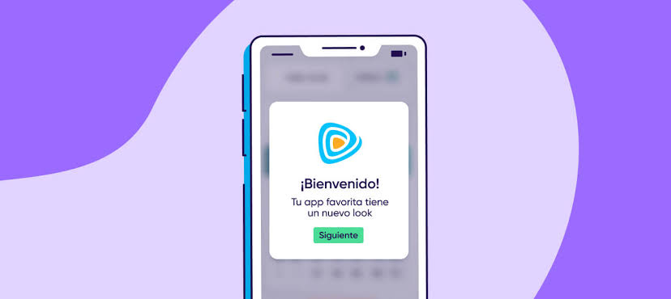
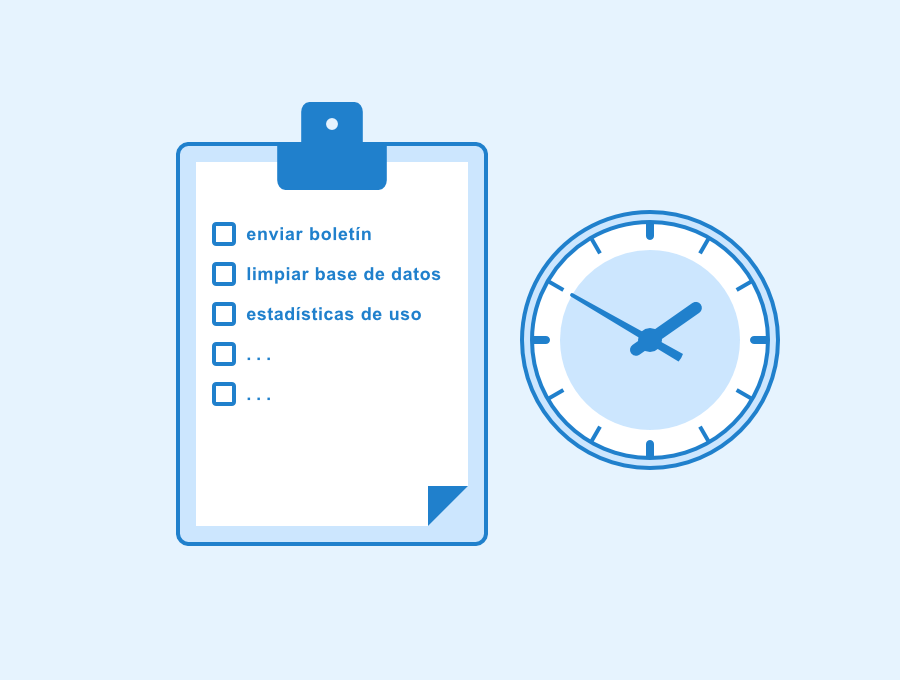

como se definen las tareas en segundo plano
son tareas que el dispositivo continua ejecutando sin que la app este abierta,esto gracias a la ram del equipo.algunos ejemplos de esto son las actualizaciones de datos del clima,sincronizacion de mensajes o la reproduccion de musica.
adroid usa workManager,foregrouns services y job scheduler.
IOS usa background fetch,silent push y background tasks.

tratamiento de notificaciones en aplicaciones moviles
El tratamiento de notificaciones se refiere a todo el proceso de gestionarenviar,recibir y mostrar mensajes y alertas a los usuarios, tanto si estan dentro o fuera de la aplicacion,esto con el objetivo de informarles o recordarles acciones,esto con el fin de fomentar la interaccion. este proceso incluye dos tipos de notificaciones principales
- notificaciones push
- notificaciones in-app
Estos son mensajes enviados por el servidor de la aplicacion al dispositivo del usuario y que aparecen en la pantalla de inicio o en la barra de esado,incluso si la aplicacion no esta abierta.comunmente se usan para reactivar la interaccion,enviar actualizaciones importantes,ofertas o autenticacion de seguridad(contraseñas de un solo uso ).
son mensajes que el usuario recive mientras esta usando activamente la app.pueden presentarse como banners,ventanas emergentes o alertas.suelen ser especificas del contexto como guias de uso,solicitudes de valoracion u ofertas exclusivas.algunos ejemplos son firebase cloud messaging(android/ios) y APNs (Apple Push Notificacions Service)
proceso de implementacion de proveedores de contenido,tareas en segundo plano y notificaciones
los proveedores de contenido permiten compartir datos entre apps(Androi:content provider).Las notificaciones pueden activarse por tareas en segundo plano
servicios de computo en la nube aplicables a la programacion de aplicaciones moviles.
Los servicios de computacion en la nube son plataformas y recursos de TI que se ofrecen a traves de internet para almacenar,procesar y gestionar datos sin necesidad de infraestructura fisica propia
Algunos de los ejemplos mas populares son el almacenamiento en la nube (dropbox o amazon s3),las bases de datos en la nube(DynamiDB,Azure SQL database),la computacion sin servidor (AWSLamda) ara ejecutar codigo o servicios de autenticacion